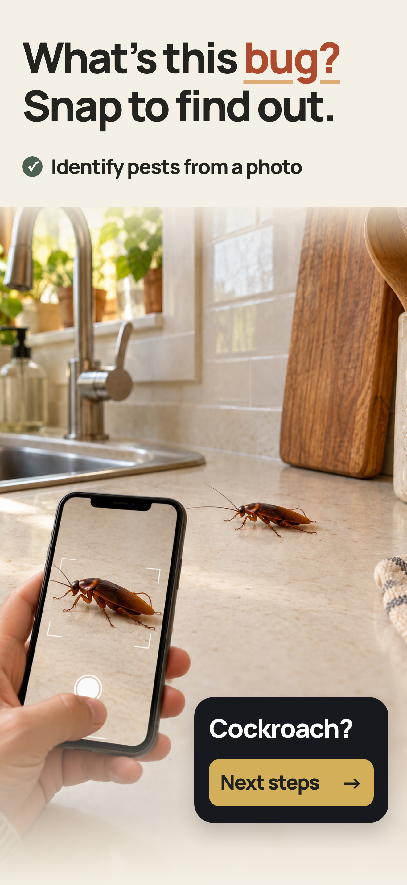
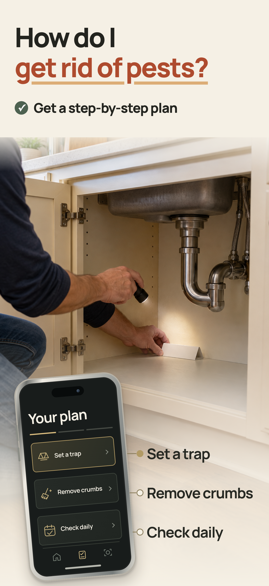
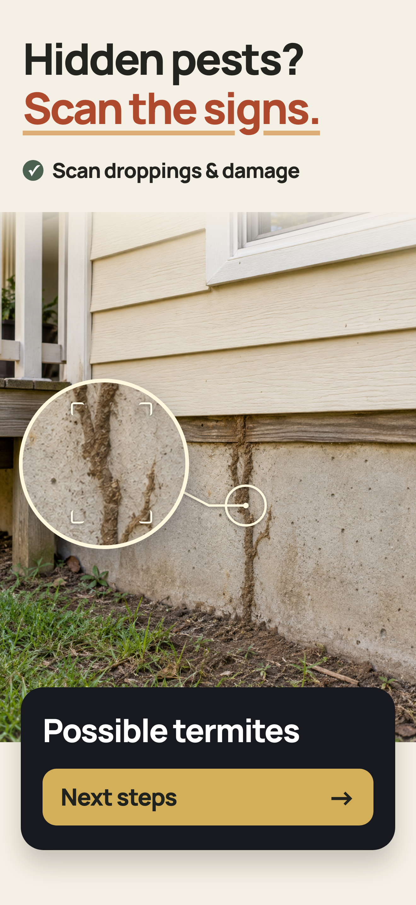

Домовладельцы
Узнать вредителя, проверить следы и понять, что делать дома.
Все материалы приложения в одном месте: скриншоты App Store, варианты иконки и продукт. Между разделами можно переходить через меню сверху.
Что нашли, что делать и чьи это следы. Последний раунд, когорты и предыдущие итерации.



Три варианта на основе оригинала: тоньше рамка, крупнее вредитель, лупа. Сравнение с текущей иконкой и архив первого раунда.
Общий вопрос — «что происходит и что делать дальше?». Контекст у каждой когорты свой.
Узнать вредителя, проверить следы и понять, что делать дома.
Проверить комнату и собрать фотографии и даты для арендодателя.
Наблюдать за следом укуса и понимать следующий шаг.
Разобраться с находкой на собаке или кошке и продолжить наблюдение.